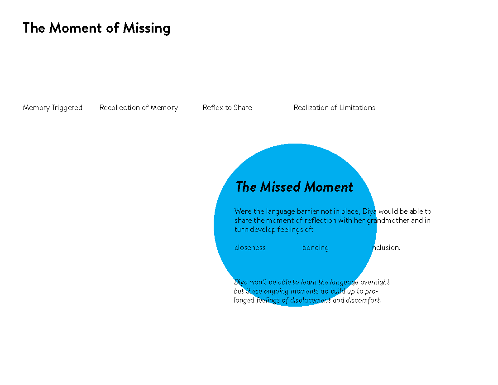

A new notification for sharing affection
Aglow
Date
May 2016
Project Details
UI + UX + Dev
Personal Prompt
I never learned my mother’s native tongue.
Immigrating to America from Sao Paulo, Brazil when I was just a bun in the oven, the stress and schedule of being a working mom prevented her from sustaining my language lessons and English quickly took over as I began my formal education in a traditional American school. As a result, I have never been able to communicate with my Brazilian family without my mother by my side as translator. A frustrating handicap that leaves me feeling disconnected from my heritage and the people I love.
Yet, I am not alone in my experience.
-

Dina
Durham, NC
Parents – Egyptian
-

Lorraine
Toronto, Ontario
Parents – Chinese
-

Lena
Michigan
Mother – Puerto Rican

Stories of Second Generation Americans
In hopes of better understanding my own struggles with learning Portuguese and how it has affected my relationship with my family abroad, I conducted interviews with a number of second-generation Americans (ages 19-24) about the language barriers they faced within their families. While some of them were more proficient in their second languages than others, all of them shared similar sentiments of frustration, dissapointment and embarassment when struggling to communicate with their loved ones.
“I was born in the states but my parents and their families are from Egypt. I sorta rebelled against learning Arabic as a kid and that made it super tough to communicate with my family overseas. ”
“It feels pretty terrible when [my grandparents] speak a string of sentences to me, animatedly with their hands, and I can only stare at them blankly, smile, and nod. ”
“I can still speak a small bit of [Taishanese], enough to get by basic ideas but I can't hold a conversation with [my grandparents] ”
“There is a tribe of us, of second and third generation, of mixed halves and quarters, who have a language that lives in their tongue, sits like a thin film on their skin, but doesn’t function quite the way language is supposed to.”
- 
A New Reservation System
To remove as many unnecessary steps as possible, the new reservation system begins on iPads mounted in the wall next to each of the doors which would allow users to claim existing reservations, as well as make new ones, without having to go to the Ask Us desk two floors below.


Fast Login
In order to confirm a reservation, or claim an existing one, the student can swipe their student ID in the card reader located below the ipad, eliminating the need to manually input University login information.


Faster Responses
Once a users has confirmed their reservation an on-duty Hunt employee will be notified via text message to come to the room in order to unlock the door. Once at the room, the employee can swipe their University ID in order to release the iPad from the mount, and transfer it to the standing mount located within the room.AudioDrive
Helping users share and save their work
Once the iPad is rotated into the vertical position and placed on the standing mount within the room, the app will then transition into the AudioDrive display which connects directly to a complementary desktop application.
Together, the Audiodrive phone and desktop apps are the heart of the music room experience for both amateur and experienced users. It allows students to seamlessly save and share their files to the connected Hunt Pods while also housing an extensive help guide with video tutorials for equipment setup.
Early Invision Prototype
1. Desktop Upload
To save a project, users can easily drag and drop their audio file to the minimal Audiodrive module.


2. Connecting to the Pods
Once a file has been saved to Audiodrive via the desktop app, users can view the uploaded file on the mounted tablet. From here users can then select a snippet of audio content, tag it with emotion or genre labels, and anonymously share it to the Hunt Pods.
The Hunt Pods
Designed to blend seamlessly into the existing Hunt library decor, the “Sensory Music Pods” further amplifies the impact of the music production rooms by allowing students and visitors to the library the unique opportunity to listen to music produced by NC State students.


Step Inside
With a combination of surround-sound speakers, LED lights and physical control knobs the pods immerse listener's in a full sensory experience as they browse through sound samples shared via the Audiodrive application.

Controlling the Experience
Using the knobs located on the pedestal, users can select which emotion category they would like to hear as well as adjust the intensity. The flexible web of LED lights installed on the inside of the pod pulse and change in response to the users choices.Anonymous Voting
Maintaining anonymity encourages music production room users to share incomplete works without hesitation. However, if a listener enjoys a particular song they are able to push down on the right knob in order to “favorite” that selection.

Listener Feedback
The number of “favs” and “plays” can be viewed by the creator when they log back into the AudioDrive application. This subtle yet substantial method of voting, allows creators to get feedback on their work without the traditional hassles and anxieties associated with sharing on platforms such as Soundcloud.